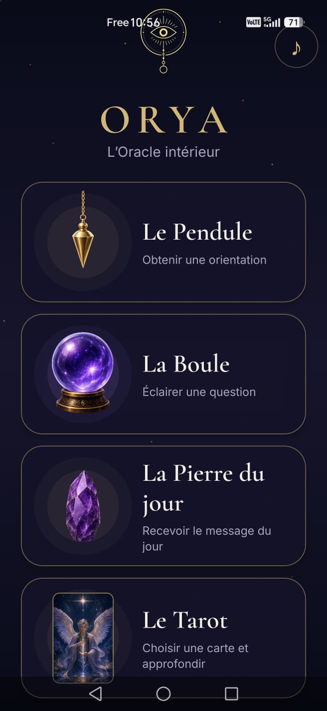

L’Oracle intérieur
ORYA propose une expérience immersive réunissant le pendule, la boule de cristal, la pierre du jour et le tarot.
01Le PenduleObtenir une orientation symbolique.
02La BouleÉclairer une question et prendre du recul.
03La Pierre du jourRecevoir un message quotidien.
04Le TarotChoisir une carte et approfondir sa réflexion.
ORYA est une application de divertissement et d’introspection. Elle ne remplace aucun avis médical, psychologique, juridique ou financier.